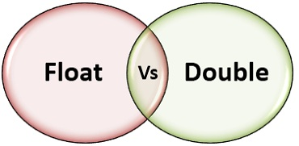

float 単精度浮動小数点数コンピュータ内では4バイトを占め、32ビットの2進数で表されます。
double 倍精度浮動小数点数コンピュータ内では8バイトを占め、64ビットの2進数で表されます。

浮動小数点数はコンピュータ内では指数形式で表され、次のように分解されます：符号、仮数、指数符号、指数の4つの部分です。
数符は1ビットの2進数を占め、数の正負を表します。
指数符は1ビットの2進数を占め、指数の正負を表します。
仮数は浮動小数点数の有効数字を表し、0.xxxxxxx ですが、先頭の0と小数点は保存されません。
指数には指数の有効数字が保存されます。
指数が何ビットを占めるか、仮数が何ビットを占めるかは、コンピュータシステムによって決まります。
数符と仮数で24ビット、指数符と指数で8ビットを占める場合もあれば --float。
数符と仮数で48ビット、指数符と指数で16ビットを占める場合もあります --double。
この4つの部分のビット数がわかれば、2進数で大きさの範囲を見積もり、それを10進数に換算することで、知りたい数値範囲が得られます。
プログラマーにとって、double と float の違いは、double は精度が高く有効数字が16桁、float は精度が7桁であることです。しかし、double は float の2倍のメモリを消費し、double の演算速度は float よりはるかに遅くなります。C言語では、double と float では数学関数の名前が異なるため、書き間違えないようにしてください。単精度で済む場合は、メモリを節約して演算速度を上げるために、倍精度を使わないでください。
| 型 | ビット数 | 有効数字 | 数値範囲 |
|---|---|---|---|
| float | 32 | 6-7 | -3.4*10(-38)～3.4*10(38) |
| double | 64 | 15-16 | -1.7*10(-308)～1.7*10(308) |
| long double | 128 | 18-19 | -1.2*10(-4932)～1.2*10(4932) |
簡単に言うと、Float は単精度で、メモリ内で4バイトを占め、有効桁数は7桁です（正負があるため8桁ではありません）。私のパソコンの VC++6.0 プラットフォームでは、デフォルトで6桁の有効数字が表示されます。double は倍精度で、8バイトを占め、有効桁数は16桁ですが、私のパソコンの VC++6.0 プラットフォームでは、デフォルトで同じく6桁の有効数字が表示されます。
例：C と C++ では、次のような代入文があります：
float a=0.1;
コンパイラがエラーを報告します：warning C4305: 'initializing' : truncation from 'const double ' to 'float '
原因：C/C++ では（VC++ だけでそうなるのかはわかりませんが）、上記の文の等号の右側にある 0.1 は float だと思われますが、コンパイラはそれを double とみなします（小数はデフォルトで double のため）。そのためこの warning が報告されます。通常は次のように変更します：0.1fで問題ありません。
私は普段、float を使わずに double を使用することが多いです。
C言語とC#言語では、浮動小数点型のデータには単精度型floatと倍精度型doubleを使用して保存します。floatデータは32ビットを占有し、doubleデータは64ビットを占有します。変数を宣言するとき、float f= 2.25fメモリはどのように割り当てられるのでしょうか？もしでたらめに割り当てられたら、世の中めちゃくちゃになってしまいますよね。実際には、float も double も保存方式は IEEE の規格に従っています。float は IEEE R32.24 に従い、double は R64.53 に従います。
単精度でも倍精度でも、保存時には次の3つの部分に分けられます：
- 符号部(Sign)：0 は正を表し、1 は負を表します。
- 指数部(Exponent)：科学的記数法における指数データを保存するために使用され、シフト保存方式を採用しています。
- 仮数部(Mantissa)：仮数部分。
出典URL：https://my.oschina.net/zd370982/blog/724265
TRDSF
429***435367@qq.com
C++ における float と double 型の精度の違い
double は精度が高く有効数字が15〜16桁、float は精度が低く有効数字が6〜7桁です。しかし、double が消費するメモリは float の2倍で、演算速度は float よりはるかに遅くなります。精度を保証できる場合は float を使用し、double はなるべく使わないことをお勧めします。
#include <iostream> #include <iomanip> using namespace std; int main() { float a=12.257902012398877; double b=12.257902012398877; const float PI=3.1415926; // 常量定义 cout<<setprecision(15)<<a<<endl; // 只有6-7位有效数字，后面的就不精确 cout<<setprecision(15)<<b<<endl; // 有15-16位有效数字，所以完全正确 cout<<setprecision(15)<<PI<<endl; return 0; }TRDSF
429***435367@qq.com
RUNOOB
429***967@qq.com
floatとdouble浮動小数点数を表すための2つのデータ型であり、コンピュータプログラミングでよく使用されます。主な違いは、精度とメモリ使用量です。
精度：
floatfloat 型は通常、単精度浮動小数点数で、32ビット（4バイト）のメモリを占有します。約6〜7桁の有効数字、つまり約7桁の10進数を表すことができます。doubledouble 型は通常、倍精度浮動小数点数で、64ビット（8バイト）のメモリを占有します。約15〜16桁の有効数字、つまり約16桁の10進数を表すことができます。メモリ使用量：
doubledouble 型が使用するメモリは float 型よりfloat多くなります。なぜなら、より高い精度を持つからです。double はより高い精度を持つため、通常はより一般的に使用される浮動小数点数のデータ型です。ただし、メモリ使用量に厳しい制限がある場合や、特定のアプリケーションで精度の要求が高くない場合は、floatfloat 型を使用しても問題ありません。
例えば、多くの計算では、doubledouble 型は、科学計算や金融モデルなどの複雑な数学演算を処理するために使用されます。これは、より高い精度を提供できるためです。一方、一部の組み込みシステムやメモリが制限された環境では、float 型が優先的に選択される場合があります。floatメモリ容量を節約するためです。
ほとんどのプログラミング言語では、floatとdoublefloat と double は組み込みのデータ型であり、通常は自動的に型推論が行われます。例えば、C、C++、Java などの言語では、直接floatとdoublefloat や double キーワードを使用して変数を定義できます。Pythonこのような動的型付け言語では、数値の型はコンテキストに応じて自動的に決定され、通常 float や double という用語はあまり一般的ではありません。
RUNOOB
429***967@qq.com